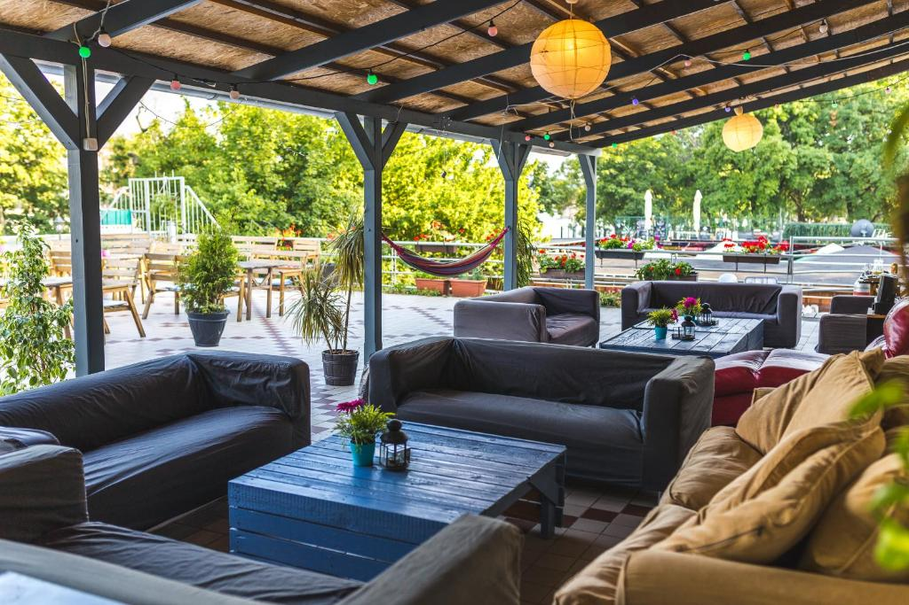
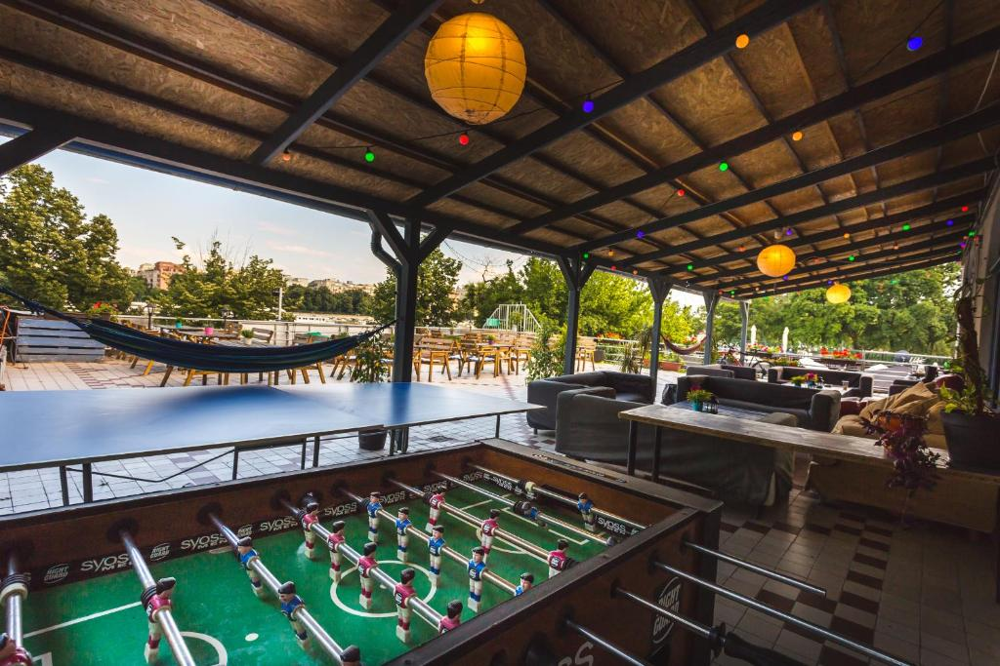
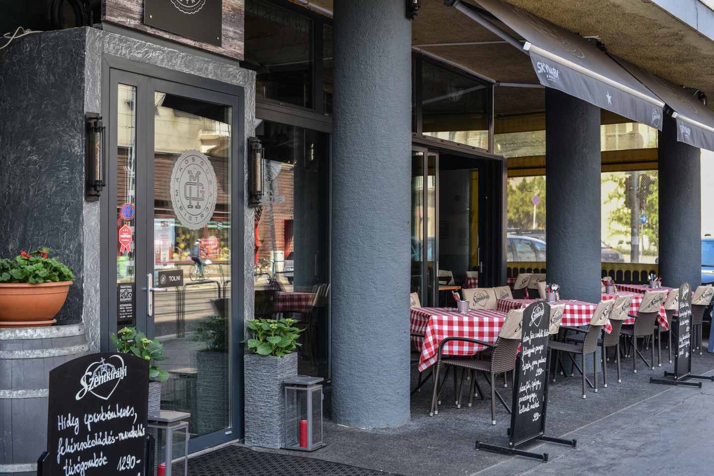
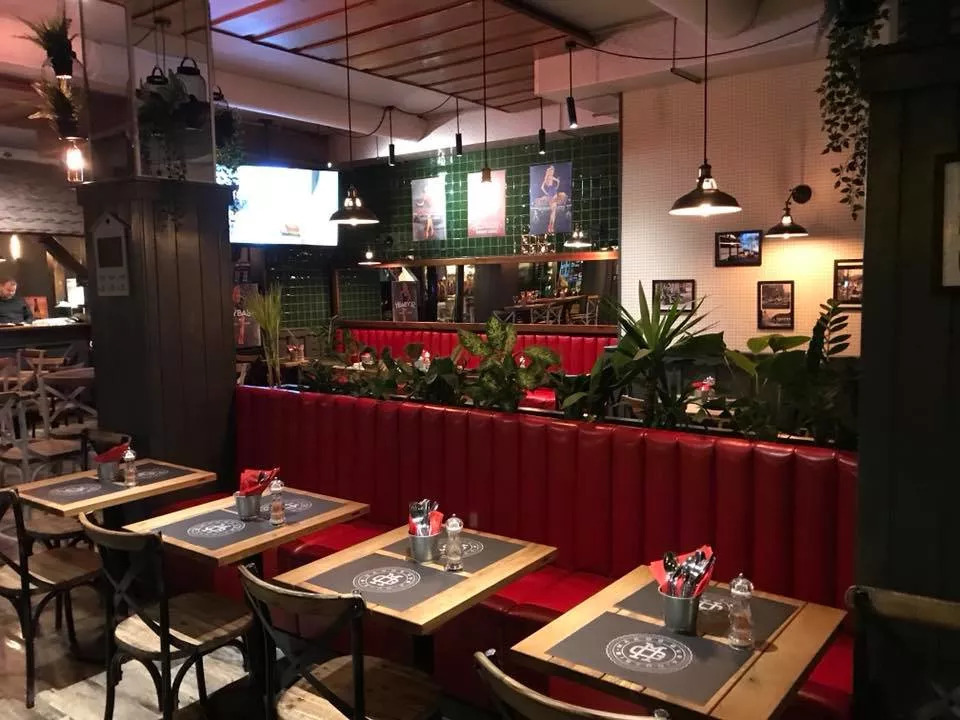

Debrecenből a Vasút állomásról indultunk . A 3 óra hosszás út nagyon gyorsan eltelt , mindenki beszélgetett és elvoltunk foglalva egymással .
A Nyugati-páyaudvarról indult a vonatunk . A hazafele utazásnál mindenki fáradt volt így egy kicsit csendesebben és nyugodtabban telt az út viszza Debrecenbe a Nagyállomásra .
A Island Hostel-ben szálltunk meg , ami a Margitszigeten található . A szállásunk egy gyönyörű helyen volt . A portás hölgy nagyon kedves volt és az ottani 15 éves Lili cica pedig nagyon aranyos volt .
 Vacsorázni a Mákosguba Bisztróba mentünk , ahol már vártak minket málna/bodza szörppel , rántotthússal és rizzsel/sült krumplival . Nagyon finom volt .
 